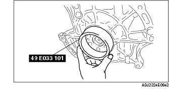

Rear oil seal replacement [ZY]
1. Remove the drive plate. (ATX) (See DRIVE PLATE REMOVAL/INSTALLATION [FN4A-EL].)
2. Remove the flywheel. (MTX) (See CLUTCH UNIT REMOVAL/INSTALLATION.)
3. Remove the oil seal lip using a cutting knife.
4. Remove the oil seal using a flathead screwdriver with the tip protected by a rag to prevent crankshaft oil seal damage.

5. Apply clean engine oil to a new rear oil seal.
6. Insert the oil seal into the cylinder block by hand.
7. Install the rear oil seal using the SST.


Pushing distance of the rear oil seal (from the edge of the cylinder block)
8. Install the flywheel. (MTX) (See CLUTCH UNIT REMOVAL/INSTALLATION.)
9. Install the drive plate. (ATX) (See DRIVE PLATE REMOVAL/INSTALLATION [FN4A-EL].)